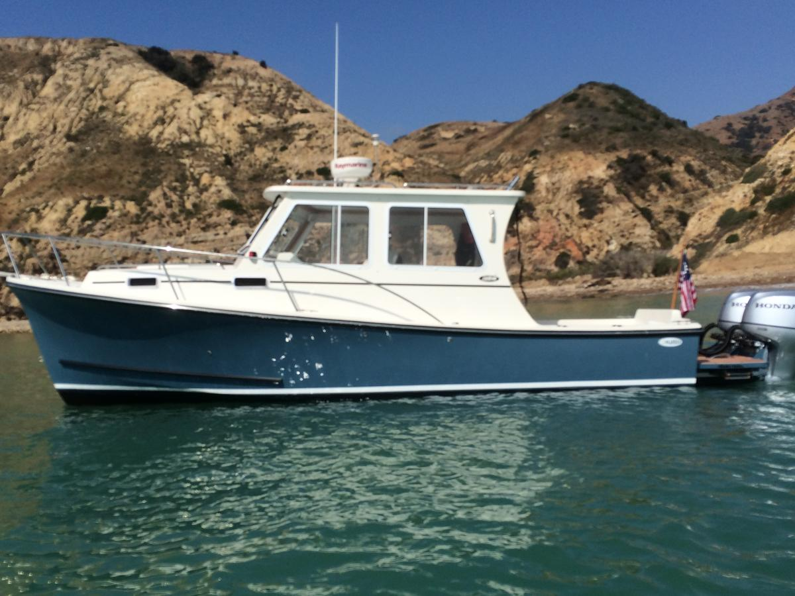

B-Atlas Boat Guide · SEAW-28-CC
Seaway 28 Coastal Cruiser Coastal Cruiser
2008–2018
The Seaway 28 is an express cruiser and semi-displacement produced from 2008 to 2018. Typical examples use single inboard, diesel, and shaft. The recorded configuration includes 1 cabin, 4 berths, and 1 head.

- Length
- 28 ft
- Beam
- 9.83 ft
- Draft
- 2.33 ft
- Hull behaviour
- Semi-Displacement
- Fuel
- Diesel
- Propulsion
- Shaft
- Engine configuration
- Single Inboard
- Boat family
- Downeast
- Construction
- Fiberglass
Best for
- Spacious pilot house hardtop configuration, dry running entry forward, single diesel tracking stability
Trade-offs
- Narrow side decks require nimble footwork, engine accessibility under salon deck requires heavy floor lifting
Known concerns
- No model-specific concern has been promoted to B-Atlas’s evidence threshold. This does not mean the model has no age-, condition- or hull-specific risks.
Inspection focus
- Trim tab ram fluid leaks, engine box insulation drop-down binding.
Continue researching
Related boat models
Seaway 24 Sport Trawler
24 ft · Semi-Displacement
Cape Dory 28 Open Fisherman Open Fisherman
27.92 ft · Semi-Displacement
Duffy 29 Downeast Hull
29 ft · Semi-Displacement
Fortier 26 Bass Boat / Downeast Cruiser
26.9 ft · Semi-Displacement
Hunt Yachts Surfhunter 29 Deep-V Express Cruiser
29.33 ft · Planing
Back Cove 26 Downeast Cruiser
26.5 ft · Semi-Displacement
About this record
B-Atlas preserves uncertainty: missing information remains unknown rather than being treated as a negative. Specifications and guidance describe the model record; individual boats can differ by year, equipment, refit and condition.